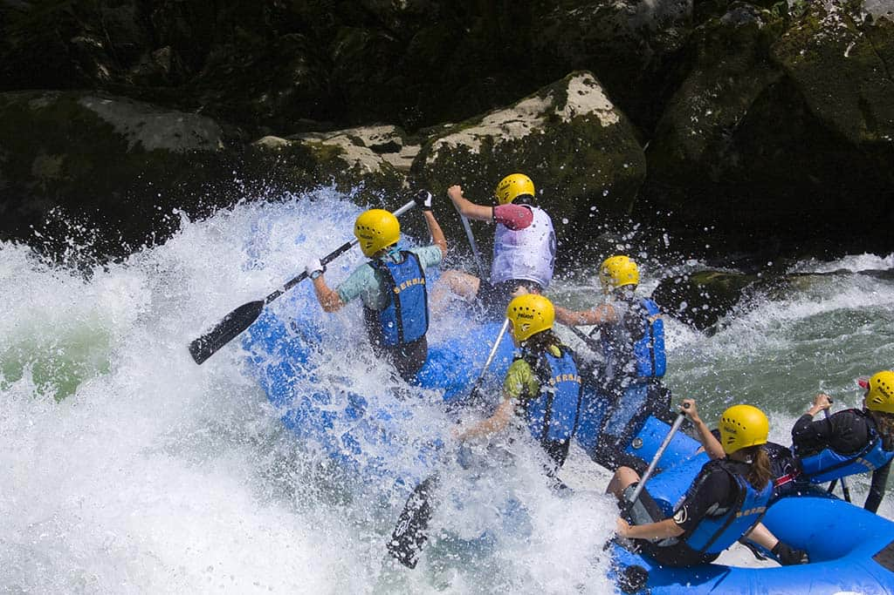
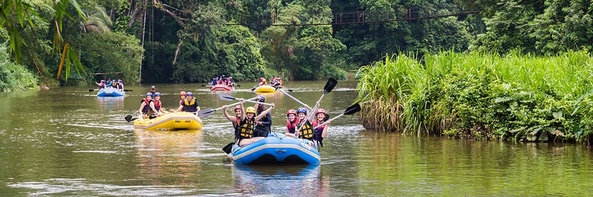

There’s a moment—just before the raft tips into the first big rapid—when everything else
disappears.
The phones are left on the bus, the to-do lists dissolve, and the only thing that matters is the
roar of wild water and
the people sitting shoulder-to-shoulder with you. In that heartbeat, the river takes over, and
you
remember what it
feels like to be completely, gloriously alive.
That’s the magic we’ve been chasing on the Guadalupe since the very beginning.
One raft. Wide smiles. Your family, your friends, your favorite people leaning in
together—screaming
through the splash,
laughing when the wave hits, holding on tight as the current pulls you faster. Every rapid
becomes a
shared rush of
courage, every calm stretch a chance to look around and realize the bonds just got stronger.
Out here the river doesn’t care how loud life has been. It only asks you to show up, grab a
paddle,
and trust the ride.
We take care of the rest—expert guides, top-tier gear, and over twenty years of knowing exactly
how
to keep the
adventure safe and the thrill dialed all the way up.
So leave the noise on the shore.
Bring the people you love most, and let the wild water write a story you’ll retell for the rest
of
your lives—soaked,
smiling, and already planning the next year’s trip.
Down the River Adventures
Where ordinary weekends turn into legendary memories.
